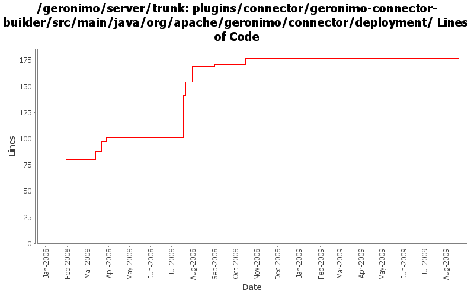

[root]/plugins/connector/geronimo-connector-builder/src/main/java/org/apache/geronimo/connector/deployment

| Author | Changes | Lines of Code | Lines per Change |
|---|---|---|---|
| Totals | 34 (100.0%) | 253 (100.0%) | 7.4 |
| djencks | 17 (50.0%) | 117 (46.2%) | 6.8 |
| gawor | 7 (20.6%) | 107 (42.3%) | 15.2 |
| vamsic007 | 1 (2.9%) | 16 (6.3%) | 16.0 |
| jdillon | 7 (20.6%) | 11 (4.3%) | 1.5 |
| dwoods | 2 (5.9%) | 2 (0.8%) | 1.0 |
remove j2ca 1.5 stuff in favor of j2ca 1.6.
0 lines of code changed in 4 files:
GERONIMO-4531, GERONIMO-4523 Simplify builder collections. Make security principal-role mappings independent of the application
1 lines of code changed in 1 file:
GERONIMO-4360 connector 1.6 support for ResourceAdapter aware Admin objects. Does not use 1.6 implementation features or api. Also modifies our 1.2 vendor schema without changing the namespace
11 lines of code changed in 1 file:
GERONIMO-4323 make default plans use 'car' as type
1 lines of code changed in 1 file:
GERONIMO-4239, sort of. Use transitive depenedencies in c-m-p everywhere. This may break stuff.... let me know
5 lines of code changed in 1 file:
handle geronimo-ra.xml without resourceadapter-instance element (GERONIMO-4218)
20 lines of code changed in 1 file:
handle config properties starting with either lower or upper case letter (GERONIMO-4131)
23 lines of code changed in 1 file:
Improve connector deployment and dynamic gbean handling (GERONIMO-4131)
50 lines of code changed in 1 file:
More loggers back to static
2 lines of code changed in 2 files:
(GERONIMO-3985) Use SLF4J as the primary logging facade for Geronimo
9 lines of code changed in 5 files:
don't process entires already processed by other builders
4 lines of code changed in 1 file:
GERONIMO-3806 CLONE -Extraneous WARN messages during deployment of resource-env-refs in EJB jar
o Applying patches submitted by Manu and Toby. Many thanks for the patch.
16 lines of code changed in 1 file:
Add sort priority order to NamingBuilder/NamingBuilderCollection. Also, updated AdminObjectRefBuilder to ignore already processed entries (i.e. check if the entry already is bound in the jndi context map). (GERONIMO-3909)
8 lines of code changed in 1 file:
Rev633988 from branches/2.0 - limit warning msg to cases where it matters
2 lines of code changed in 2 files:
GERONIMO-3787 likely fix for corba dependency problem
7 lines of code changed in 1 file:
GERONIMO-3480. Allow ResourceAdapter, ManagedConnectionFactory, and AdminObject properties that aren't mentioned in the ra.xml
72 lines of code changed in 1 file:
GERONIMO-3742 Split up namespace upgrades into the modules that need them
20 lines of code changed in 1 file:
moved generic ResourceReference.java and ResourceReferenceFactory.java to geronimo-naming module from geronimo-connector module
2 lines of code changed in 2 files:
GERONIMO-3718 experimental patch to speed up resource-refs.
0 lines of code changed in 6 files: